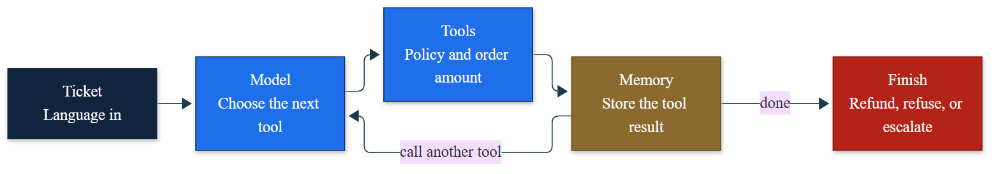
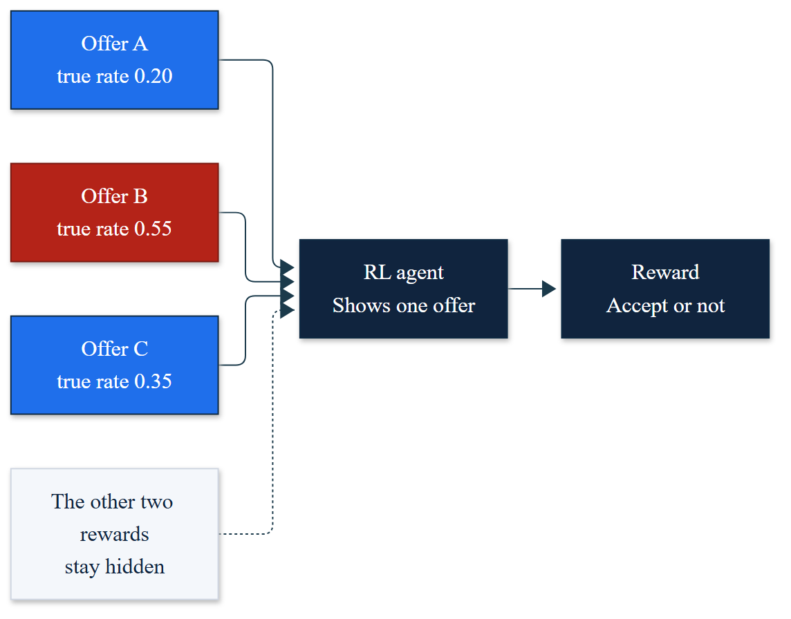
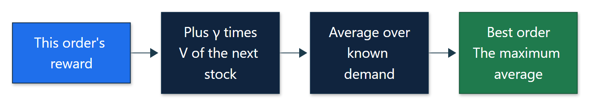

Olin Business School · Fall 2026 · 1.5 credits
DAT 5668
Agentic AI
Autonomous Decision-Making. Design agents that observe, decide, act, and use feedback. The course teaches language-model agents and reinforcement-learning agents as two ways to run that same loop.

How to follow
The course is 13 sessions. We meet Mondays and Wednesdays at 4:00 pm in Simon Hall, Room 00122, and the first meeting is Session 1. Instructors: Salih Tutun and Gerald Onwujekwe.
Open a notebook in Colab, or download the folder and run it in Python with NumPy. The cases are simulated course examples. Do not paste confidential data into a public tool. Session 1 still runs if no API key is set. Quizzes stay on Canvas, so this page does not include quiz questions or answer keys.
13 sessions
Open the session we are in. Colab runs the student notebook.
The agent loop
One loop for both families: observe, decide, act, feedback. The decide step uses a local stand-in, or Gemini when the instructor sets a key. The quiz on this session is due one hour before Session 2.

A tool-using agent
Build the refund agent in class. Homework is the refund cap, after class, on your own.

Retrieval and a handoff
A researcher, an analyst, and a reviewer. Type your own question in class. The quiz on this session is due one hour before Session 4.

Bandits
Show one offer at a time. The other rewards stay hidden. Homework adds a fourth offer.

Inventory as a decision process
Stock, order, demand, and reward. Guess the empty-shelf reward before you run it. The quiz on this session is due one hour before Session 6.

Go / no-go memo
Design one process both ways and vote before you write. Homework is the pricing memo.

Bellman, Monte Carlo, and TD
Value iteration and one temporal-difference update. Call the order at an empty shelf. The quiz on this session is due one hour before Session 8.

Tabular Q-learning
Run the unfinished agent first, say the return, then write the update together. Homework turns the stockout penalty off.

From a table to a network
Why a table breaks, then replay and a target network. The quiz on this session is due one hour before Session 10.

A short training run
Bet whether the short run beats base-stock, then train and make the deploy call together. Homework compares two exploration rates.
A hybrid
The language agent reads the exception. The learned policy releases the daily order. The quiz on this session is due one hour before Session 12.

Scorecard and governance
Vote, then score both pilots on one sheet. Homework scores a second pilot and writes the governance lines.

Presentations
Groups of 1 to 3. About 7 minutes. State the loop, justify the family, compare a baseline, and include a governance note.
Two families, one loop
A chatbot is a poor inventory controller. A deep Q-network is a poor contract reviewer. Match the family to the input and the feedback.
The input is language or a document. The model acts by calling a tool. Feedback is a citation and a review. Sessions 2 and 3.
The input is a repeated numeric state. A learned policy picks the action. Feedback is a reward. Sessions 4 through 10: bandits, MDPs, Q-learning, and deep Q-networks.
Grades and tools
| Work | Share | Where |
|---|---|---|
| Quizzes, lowest score dropped | 30% | Canvas, before Sessions 2, 4, 6, 8, 10, and 12 |
| Homework | 20% | Individual, after Sessions 2, 4, 6, 8, 10, and 12 |
| In-class practice | 15% | Sessions 2, 4, 6, 8, 10, and 12 |
| Project | 30% | Session 13 |
| Lab participation | 5% | In class |
Using the agent code in an assigned lab is allowed. Using Copilot, ChatGPT, or a similar tool to write a quiz, a homework write-up, or the project report is not allowed unless that assignment says you may, and then you cite how you used it. Prerequisites: DAT 5565 or DAT 6565. Software: Colab, Python, NumPy, and Matplotlib. Questions: salihtutun@wustl.edu.